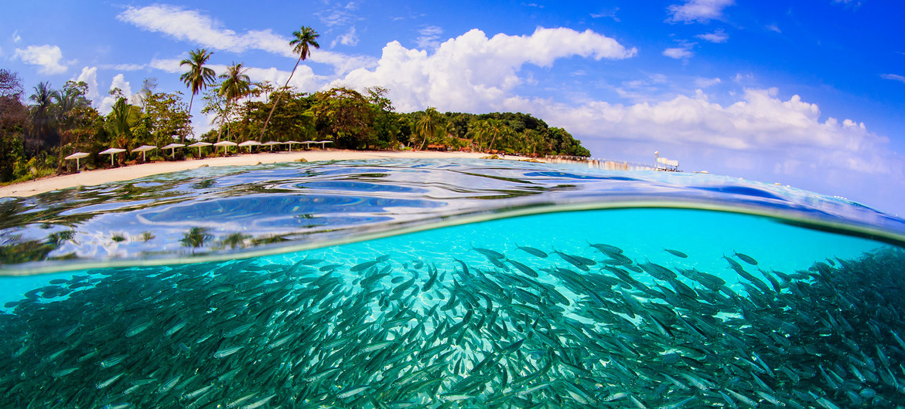

DEBEMOS CUIDAR A TODAS LAS ESPECIES
Hay miles de especies en la Tierra que se encuentran en peligro de extinción y debemos luchar para que sobrevivan.
Cada animal y ser vivo tiene un proposito que genera el correcto balance de la vida.
Si ellos desaparecen, el balance también.
Cuidando a los animales le damos un balance al planeta
Cada una de las especies tiene un fin unico en el planeta
Cada día que pasa la falta de alimentos se agranda, y la supervivencia se hace extrema
MUCHAS ESTAN EN PELIGRO DE EXTINCIÓN
Cada especie tiene un habitat especial, de diversas maneras el ser humano se lo ha transformado y destruido.
Es por esto que con acciones de concientización podemos hacer que muchos se interesen en salvar la vida de animales indefensos ante la maldad de algunos humanos.